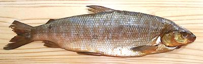

Whitefish is an Arctic and subarctic estuary, river and lake fish related to the salmon. Whitefish can grow to about 30 inches and about 20 pounds but the photo specimen was 19-3/4 inches and weighed 2-1/2 pounds factory cleaned. They are generally caught wild but are also farmed.
More on Varieties of Fish
(very large page).
 Whitefish are often smoked but are also an important fresh fish in the Frozen North, particularly in Russia, Alaska, Canada and the U.S. Great Lakes region. The roe is valued as a pretty good "caviar".
Whitefish flesh is is very mild and breaks up easily into medium size flakes. The skin side of the fillet is darker, particularly along the center, and slightly stronger in flavor but still mild. Fillets hold together well enough for poaching. Use a fairly delicate saucing to avoid overwhelming the fish.
I've been assured by a person with Native Alaskan experience that whitefish is good in chowders but best eaten as frozen chunks dipped in Seal Oil. Unfortunately, seal oil's pretty scarce (and illegal) in Southern California.
Scales: This fish is completely covered with shiny, medium size scales that scrape off quite easily.
Cleaning: Like any relative of the trout, the body cavity is quite long, so there's a lot of stuff in it. On the other hand, like trout, this fish as sold in the United States is generally factory cleaned, with only the gills left in.
Filleting: This is not difficult, but there are not enough fin rays nor are they long enough to guide you from the top of the fish to the backbone, so you'll just have to pay attention. Be gentle with the filleting because the flesh is tender and tends to break apart with rough handling. As you get to the backbone you'll have to break through a substantial row of centerline pinbones.
The rib cage is very long with lots of ribs and is pretty easy to follow with your filleting knife. Start by freeing the top and over the backbone at the tail, then shave the fillet from the ribs starting at the back. You could also just use kitchen shears to cut the ribs from the backbone. They pull easily and cleanly from the soft flesh of the fillet. In either case, also pull the centerline pinbones, straight forward as usual. They're easy to feel out in this fish and they pull easily and cleanly.
Skin: Skin shrink is quite moderate and relaxes with cooking so fillets can be fried skin-on. Like other Trout relatives, Whitefish is most often cooked skin-on.
Yield: Yield is pretty decent. A 19-3/4 inch 2.5 pound (factory cleaned) fish yielded 1.7 pounds of skin-on fillet and 1.5 pounds skinless (60%). Of course it won't be quite that good for a fish that hasn't been factory cleaned.
Stock: Whitefish heads, bones and fins make a light, very serviceable stock for soup, but with quite a bit of oil. Remove the oil using your gravy separator.
sf_whitez 061224 - www.clovegarden.com